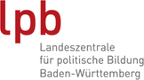
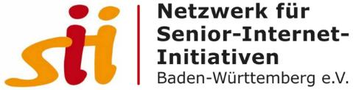

Digitale Teilhabe im Alter
Positionierung zur Digitalisierung in Baden-Württemberg
Offenes Seminar · 12.–14. Oktober 2026 · Haus auf der Alb, Bad Urach


Vortrag · Dienstag Vormittag · 45 MinutenDI.DAY, Technik und politische Hintergründe
Input · Dienstag Vormittag · 20 Minuten
Workshop · Dienstag Nachmittag · 2x 90 Minuten